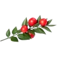

Plant Grimoire

Butcher's BroomButcher's Broom (Ruscus aculeatus) is a compact evergreen shrub native to the Mediterranean, recognized by its stiff stems, yellow flowers, and bright red berries.
History
Butcher's Broom has a long record in herbal tradition. The first-century physician Dioscorides noted its value as a laxative, while the seventeenth-century herbalist Nicholas Culpeper recommended it in the treatment of broken bones.
Characteristics
Also known as knee holly or box holly, butcher's broom is a low-growing evergreen shrub. Native to the Mediterranean region, it has since naturalized across parts of the Pacific Northwest. It bears small yellow flowers and vivid red berries and is most recognizable by its exceptionally tough stems -- the kind of rugged, woody growth its common name implies.
Magickal Properties
Butcher's Broom is a powerful ally in clearing and boundary work. Use it when reclaiming sacred space that has been energetically compromised, or when you need to reinforce and protect your personal boundaries. Craft an herbal charm with butcher's broom to amplify workings focused on clarity, space clearing, and the restoration of energetic order.